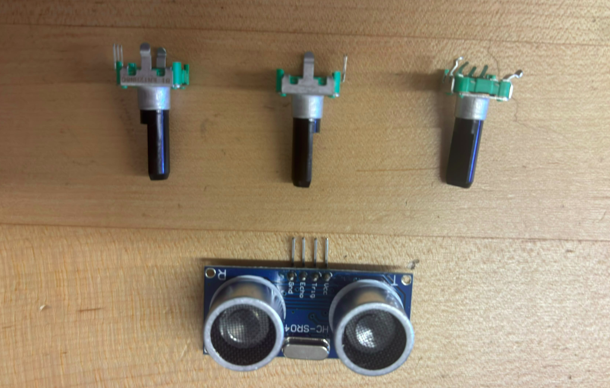

$5 vs $150 Sensing
The story of how our Robot Team made the playoffs using 3 24-tick mechanical encoders and a sonar

I like how our team's dependence on software solutions greatly improved by reasoning skills and ability work under low budget
This story happens in the Engineering Physics Robot Summer (See my project 'Autonomous Mars Rover)". Below are the more important competition rules for context:
- Each team has 200 budget
- We can choose to do multiple tasks out of 5
- Detect teletubbies using computer vision
- Metal detect rocks and pick up the metal ones
- Build a tower from pieces laid on the ground
- Uncover a solar panel by removing a textile with a ring
- Build a habitat using 4 pieces
- Robot must run completely autonomously
During the planning stage of the competition, we planned to focus on rock, teletubby, and habitat. Because we had to do computer vision, we bought a raspberry pi, costing us ~100$ already. When we designed of the robot, we thought "Why do we need an IMU or optical sensor or high resolutions anyway, no way other groups are using stuff this expensive". We settled with just dead reckoning using wheels and frequent indexing off side phtotransistors. Note that the wheel encoder we dead reckon with are the 24 tick, mechanical encoders... NO QUADRATURE, so NO DIRECTION
But boy we are wrong. A few weeks into the course, asking around let us discovered how under equipped our robot is.... Almost EVERY other team, either has an IMU, optical sensor, lidar. Even the ones with only encoders have like 4096 ticks per revolution magnetic encoders in quadrature. In addition to that, we were running a three wheel kiwi-drive. Holonomic drives usually require higher precision of encoders/sensors because the wheels essentailly "go against" one another....
In addition to that, we were very late in noticing this issue. We spent weeks resoldering H-bridges (actually), and when most teams were already running the course, we just starting tuning our PIDs. Because of my experience in thunderbots, it was not that difficult to get a working PID despite our hardware deficiencies. However, the real problem came when we try to dead reckon with our wheels.
We had to dead reckon a lot of things, which honestly should've been the first red flag that our sensor setup wasn't cutting it. Eventually we switched to sonar to get a little more tolerance since pure wheel dead reckoning was drifting too much to trust. But sonar came with its own headache, the cone shape of the reading meant we weren't getting a clean single point distance, we were getting a spread. So we had to manually calculate the actual range based on the cone geometry and adjust the sonar's mounting height just to get readings we could actually rely on.
The robot also couldn't drive reliably at low speed, which became a real problem specifically at checkpoints, like the end line for habitat, where precision actually mattered. It would consistently deviate slightly right when it needed to be dead on. So we ended up writing this whole correction system where the robot would remember which side reached the line first, then rotate in a specific direction to bring the other side up until it hit the line too. It was scuffed as hell, basically the robot arguing with itself until both sides agreed, but it worked.
Along the way we cycled through a handful of different control methods trying to find something that could actually hold up given how bad our hardware was. Nothing was a clean fix, it was more just testing whatever seemed like it might buy us a little more stability.
Then there was the encoder bug. We spent two full days tuning before we finally figured out the encoder pins were just swapped. It was such a subtle issue to catch because our feedforward term was big enough relative to the PID correction that the robot still moved in a way that looked mostly right, just enough to make you think the problem was somewhere else entirely. Two days chasing a wiring mistake because the math was masking it.
Honestly looking back at all of that, I'm still kind of shocked it worked as well as it did. We went from being the team with the worst sensors in the entire competition to actually finishing rocks, teletubbies, and habitat clean, plus almost able to pick up the tower and uncover the solar panel. But I want to be straight with myself about why we ended up in that hole in the first place, it wasn't bad luck, it was a bad assumption. We looked at a $200 budget and decided the smart move was betting no one else would spend on real sensors. That was wrong, and it cost us weeks we didn't have to lose. However, I need to be honest to myself that it was our own fault to end up in this hole in the first place. It was just bad assumption that every team will have bad sensors. Even if they do, what is the problem of having better sensors so we can out-perform our competition?
What actually got us back to competitive wasn't some clever insight, it was just refusing to write off any of the five tasks once we realized how far behind we were. Every fix, the sonar height calibration, the rotate-until-it-hits correction logic, finally catching the swapped encoder pins after two days of confusion, was us treating "we're behind" as a problem to solve instead of a reason to scale back. If we'd made the same call on hardware today, I'd do it differently. But given that we didn't, the thing I'm actually proud of isn't the results, it's that we didn't let one bad decision in week one decide how the rest of the summer went.